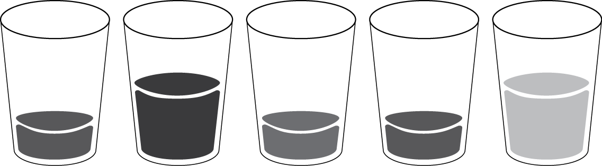
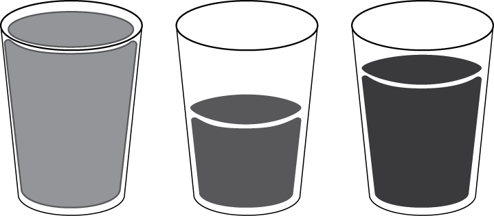

The twelve-factor engineer is a personal contract of twelve principles aimed to ensure that an engineer is striving to be the best he or she can be in their role as a software or infrastructure engineer.
This set of principles is highly inspired by the well-known twelve-factor app. Unlike the twelve-factor app, which applies to the development of modern cloud-native applications, the twelve-factor engineer focuses on the personal development of the engineers who develop software applications along with engineers who provide the platforms and infrastructure which that software requires to run.
The twelve-factor engineer is not associated with the twelve-factor app in any way.
Any developer and infrastructure engineer who either develops web applications or builds, maintains, and supports web application infrastructure and services.
Any manager or people-leader who oversees a team of engineers.
Share knowledge and reduce obfuscation.
Be approachable by peers and users.
Reduce manual processes, service tickets, and human error through code and automation.
Be genuinely interested in your field and constantly learn.
Consider opposing opinions, ideas, and methodologies.
Question opinions, ideas, and methodologies.
Have awareness and/or knowledge, to some degree, on a variety of topics.
Strive for expertise and mastery in a small set of topics and skills.
Influence your environment and the people around you in a positive way.
Reduce complicated proposals into elegant, yet complex solutions.
Change and adapt with time.
Contribute back to the industry.
A twelve-factor engineer is always transparent on what he or she is working on. The engineer strives to reduce "Tribal Knowledge", which is the collection of knowledge passed along in one-to-one conversations and interactions overtime.
The engineer should activity disavow the practice of withholding knowledge, system understandings, and methodologies for one's own job security and the illusions of irreplaceability.
At any point, the team on which the engineer is a member of should be able to operate and function in all of its duties in the event that the engineer is no longer a member of that team.
The engineer should avoid obfuscation within any code, and ensure documentation is worded simply and is understandable by the targeted audience.
The work in which an engineer is working on should be open and viewable to the appropriate audiences. For example, all code in which an engineer is working on should be tracked in a source-code repository and all notes and documentation should be tracked in a viewable wiki space or README file which accompanies the work. Personal notebooks should be eliminated or drastically reduced and all work should be tracked in a common tracking system such as a story/feature board etc.
People want to work with other people that are approachable, friendly and willing to help. The twelve-factor engineer should show a willingness to work with others, answer questions or be available to seek general advice from.
The engineer should be eager to help other peers and end users. Engineers should refrain from responding to questions with nothing more than a hyperlink to an online resource and instead show curiosity and interest in what a peer or user is trying to do.
The engineer should never work within a silo and instead solve problems directly with other engineers either through the use of paired programming or whiteboard sessions.
If the engineer is in a support role, such as primarily troubleshooting infrastructure problems, it should be expected of the engineer to assist and provide guidance to any peers leading the investigation if asked. An engineer always strives to offer his or her assistance.
It is never expected that an engineer be able to drop everything he or she is doing at the drop of a hat, especially if the engineer is particularly busy. To compensate for the lack of flexibility, an engineer should always be available and reachable in collaborative chat rooms such as IRC, Slack, etc. Although it is understandable that the engineer may be on do-not-disturb/have notifications turned off, it is important that the engineer still be reachable by others.
The ability to solve problems through software has historically been a skillset of an application developer. With the advent of the infrastructure-as-code paradigm, it is now vital that both system engineers along with application developers acquirer the skillset of programing and knowledge of development workflows.
A twelve-factor engineer should be versed in software development skills. Examples are working with source-code repositories such as git and subversion and know at least one general purpose programing language to a degree of confidence. The engineer understands that each problem requires the right tool for the job and is willing to learn new languages and technologies to solve such problems.
An engineer should always strive to obtain the following skills and knowledge:
Technologies, paradigms, and languages come and go. Todays state of the art is tomorrow's deprecated systems and tools. The engineer should be comfortable with change, and the realization that the majority of all technologies, languages and paradigms have come and gone.
A twelve-factor engineer is constantly learning, and genuinely curious about new ideas, languages, and methodologies. The engineer is self motivated to learn and to experiment with technologies and tools, always gaining to obtain a better understanding of how things work under the hood.
The engineer dedicates time outside of their normal job or role for personal development and learning. This can be done through the creation of personal projects, reading a technical book or article, or participating in open source projects.
The engineer should always strive to listen to their peers and users. Although the engineer may fundamentally disagree with opposing viewpoints and proposals, he or she listens to gain a better understanding of the root problem at hand or the issue a user is experiencing.
A twelve-factor engineer should never dictate mandates, or utilize rank and stature to gain an unfair advantage over an opposing opinion or idea.
When apart of a team, ideas should never be shelved or disregarded, a twelve-factor engineer may utilize rank or stature to ensure that all ideas are give a fair discussion. When possible, the engineer should strive to help articulate ideas which have potential but may have been explained poorly.
The engineer understands that he or she will be proven wrong.
All opinions, ideas and methodologies should be questioned. The twelve-factor engineer engages in dialogues with peers and users to gain understanding and to ensure proposals or methodologies are sound and proven.
The engineer should always show respect for peers and more senior engineers but show no loyalty or favoritism to the opinions and ideas of said peers and engineers. Each idea is to be considered its own entity, to be proven on its own merits and can be explained logically and articulately.
The engineer counters using logical arguments, and or empirical evidence in support of their own opinions, ideas and methodologies. The engineer also expects the same to be presented in support of a questionable opinion, idea, or methodology.
The twelve-factor engineer sees their knowledge as a series of empty glasses with each glass representing a pillar of knowledge. The engineer ensures that each glass is filled up to some degree. Having a little bit of knowledge in many glasses ensures that the engineer can communicate and work with others who have much more knowledge in the same glass, thus fostering a useful dialogue.
Having knowledge in many topics and areas ensures the engineer is aware of the other disciplines and specialties he or she does not have time to dedicate deeply into. Such awareness allows the engineer to dive deeper if needed in the future.
A future problem or scenario may call for a solution from an unlikely source, having broad awareness of many possible solutions ensures that the engineer can give that source a deeper look.
The twelve-factor engineer admits that he or she does not know everything or may not have a well understanding of one or more topics. The engineer is willing to perform further research and experimentation to gain more insight and knowledge. Answers which are provided by other peers should be questioned to gain a better understanding and thus fill up a glass with a little bit more knowledge or start a new glass entirely.
As each glass sits, the knowledge within it will slowly evaporate unless given attention. The twelve-factor engineer should continually check back in on certain areas outside of their expertise to retain already gained knowledge or to become aware of the changing paradigms and technologies within those areas.
An engineer should devote significant time and dedication to learning one or more topics to a degree of expert or mastery. A twelve-factor engineer can be seen as a leader in a given subject or area of discipline within an organization.
A twelve-factor engineer can be trusted by their peers and users to solve difficult problems pertaining to their discipline. The engineer understands what is possible and the limitations pertaining to their discipline and knows when their area of expertise is not the right solution for the problem.
In regards to his or her area of expertise, the engineer can confidently convey concepts, solutions, algorithms, and ideas simply and elegantly in layman's terms to peers and users.
Ideally, the engineer should be passionate about the areas he or she chooses to master and genuinely enjoys the time spent dedicated to such topics.
The twelve-factor engineer is seen as an influencer in their organization and industry. Any influence the engineer has on an organization, and or team should be seen as positive and progresses the organization or team forward into an improved state.
Progress can be seen as taking a lead role in architectural decision making, proving concepts and ideas through working models and proof of concepts.
The engineer has a proven record of fostering collaboration and demonstrates the ability to change the minds of peers and users.
The twelve-factor engineer influences the direction of projects, systems, and or technologies.
Complicated systems, algorithms, and tool-chains should be reduced to their most simplistic parts. The twelve-factor engineer never strives to add additional complexity to a solution unless necessary.
The engineer favors tools, and programming languages which are intuitive, approachable by peers and easily maintainable.
The engineer words documentation and communication in a simple and understandable way. He or she always defines terms and stays away from uncommon industry jargon, acronyms or idioms. The engineer always knows the audience he or she is writing for.
Twelve-factor engineers are never stuck in their ways or seen as an impediment to change. In the industry of computer science, and information technology the one thing which is certain is change - the engineer must always accept change and be willing to change.
Change may be learning a new, required skillset, such as coding and/or working with REST APIs. Change may also be a change in mindset such as being comfortable with the idea that automated systems are more reliable than humans performing tasks or work within a workflow.
Regardless, the twelve-factor engineer should always be optimistic and be willing to participate in new methodologies or work with unfamiliar technologies and languages.
A twelve-factor engineer understands that the internet provides a great wealth of information and resources such as answers, tools, and ideas which he or she utilizes in their daily work.
It is important that the engineer gives back to the industry by participating in conversations, providing answers to posted questions, or contributing/participating in open-source projects.
The engineer should strive to write often about their ideas, methodologies or offer insight into a topic lacking valuable and in-depth content.